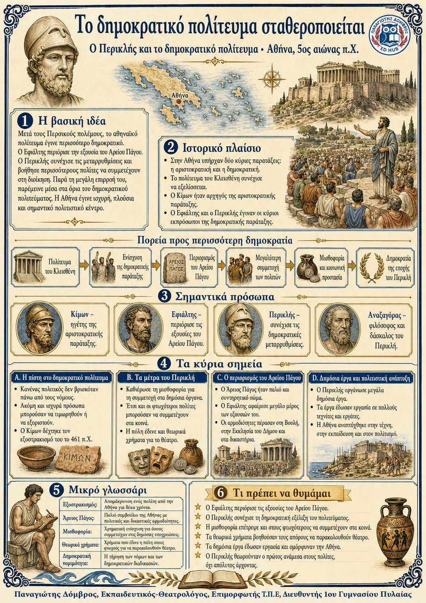

Πληροφοριογράφημα ενότητας
Το πληροφοριογράφημα αυτής της ενότητας δεν έχει ανέβει ακόμη. Οι σημειώσεις παραμένουν πλήρως διαθέσιμες.

Αθήνα, 5ος αιώνας π.Χ.
Μετά τους Περσικούς πολέμους, το αθηναϊκό πολίτευμα έγινε περισσότερο δημοκρατικό. Ο Εφιάλτης περιόρισε την εξουσία του Αρείου Πάγου. Ο Περικλής συνέχισε τις μεταρρυθμίσεις και βοήθησε περισσότερους πολίτες να συμμετέχουν στη διοίκηση. Παρά τη μεγάλη επιρροή του, παρέμεινε μέσα στα όρια του δημοκρατικού πολιτεύματος. Η Αθήνα έγινε ισχυρή, πλούσια και σημαντικό πολιτιστικό κέντρο.
Πολίτευμα του Κλεισθένη ↓ Ενίσχυση της δημοκρατικής παράταξης ↓ Περιορισμός του Αρείου Πάγου ↓ Μεγαλύτερη συμμετοχή των πολιτών ↓ Μισθοφορία και κοινωνική προστασία ↓ Δημοκρατία της εποχής του Περικλή
